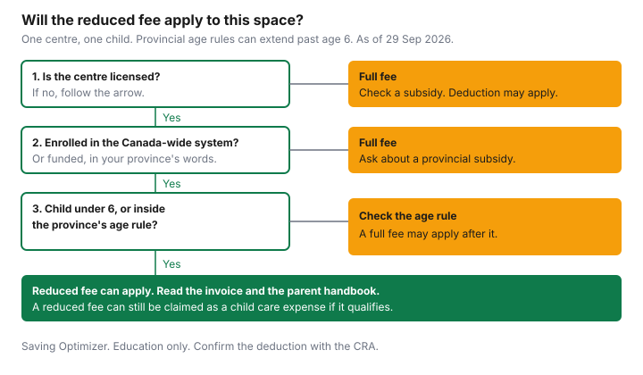

Kids · Canada
$10-a-Day Child Care in Canada (2026): Where Fees Stand by Province and How to Get a Space
Parents hear "$10 a day" and then open an invoice that is nothing like $10. The Canada-wide system is a set of agreements with provinces and territories, not one national price. Some jurisdictions describe average fees of $10 a day or less. Others describe average reductions of 50 percent or more, with a different daily number on the provincial page. A centre that is licensed but not enrolled can still charge its own fee. This guide is a status check from the pages below, plus a worksheet you fill with your centre's numbers. It does not rank programs.
Key takeaways
- The ESDC campaign page, as of 29 September 2026, says fees were reduced by at least 50 percent on average by the end of 2022, and that governments are working toward $10 a day on average.
- That page lists Newfoundland and Labrador, Prince Edward Island, Quebec, Manitoba, Saskatchewan, Yukon, the Northwest Territories, and Nunavut at average fees of $10 a day or less, and Nova Scotia, New Brunswick, Ontario, Alberta, and British Columbia at average reductions of 50 percent or more.
- The same page says five-year extensions, from 2026–27 to 2030–31, were signed with 11 provinces and territories, and that Ontario and Alberta signed one-year extensions for 2026–27. On 29 September 2026, Canada and Ontario announced a four-year extension from 31 March 2027 to 31 March 2031.
- Quebec's reduced contribution for 2026 is $9.65 a day, indexed each 1 January. Alberta's fee page describes a flat parent fee, as of 1 April 2025, where the provider has affordability funding.
- Reduced fees do not remove the federal child care expense deduction. Confirm the claim with the CRA.
What the Canada-wide agreements promise, and the 2026 to 2031 extensions
Employment and Social Development Canada's campaign page says that between July 2021 and March 2022, Canada reached Canada-wide early learning and child care agreements with all 13 provinces and territories, including an asymmetrical agreement with Quebec. The affordability goals on that page are a reduction of fees by at least 50 percent on average by the end of 2022, and work toward $10 a day on average.
The page's map text puts eight jurisdictions at average fees of $10 a day or less and five at average reductions of 50 percent or more. A November 2025 Saskatchewan release says the same split: eight provinces and territories, including Saskatchewan, at an average of $10 a day or less, and all other jurisdictions with fees reduced by 50 percent or more. Use those sentences as the federal description. Your invoice is the provincial rule plus your centre's enrolment.
On extensions, the campaign page says Canada signed five-year extension agreements, from fiscal year 2026–27 to fiscal year 2030–31, with 11 provinces and territories, and that Ontario and Alberta signed one-year extensions for 2026–27. The page also lists, in its news, the 29 September 2026 announcement of a four-year Canada–Ontario extension. That release sets the Ontario term from 31 March 2027 to 31 March 2031, with a commitment to hold an average of $19 a day until 30 June 2027. Saskatchewan's 28 November 2025 release describes a five-year extension starting in 2026–27 and running until 31 March 2031, with more than $1.6 billion in federal funding over five years, including an annual 3 percent funding increase. The Ontario fee guide stays on the $22 cap and that extension. Alberta's childcare-fees page, as of 29 September 2026, describes the parent fee and does not, on that page, state an extension end date. Check Alberta for the agreement term.
Province-by-province fee picture: who is at $10 a day and who is still on the way
Read the row for where you live. A cell that says "Check the provincial page" means this guide does not quote a parent fee for that province or territory. Estimated savings in the ESDC column are the campaign page's figures, as of 29 September 2026, described there as estimated average annual savings per child since the Canada-wide system. They are not a quote for your family.
| Province or territory | Extension status (source) | Fee picture stated on the official page (date) | Where to check your space |
|---|---|---|---|
| Newfoundland and Labrador | ESDC campaign page: in the group of five-year extensions, 2026–27 to 2030–31. Ontario and Alberta are the jurisdictions that page names for one-year extensions. | ESDC: average fees of $10 a day or less. Estimated saving $3,900. Check the provincial page for the current parent fee. | childcare.gov.nl.ca |
| Prince Edward Island | ESDC: five-year extension group, 2026–27 to 2030–31. | ESDC: average fees of $10 a day or less. Estimated saving $4,800. Check the provincial page for the current parent fee. | earlyyearspei.princeedwardisland.ca |
| Nova Scotia | ESDC: five-year extension group, 2026–27 to 2030–31. | ESDC: average fee reduction of 50 percent or more. The page says discussions are ongoing with Nova Scotia to determine the current average daily fee and the associated saving. Check the provincial page. | childcarenovascotia.ca |
| New Brunswick | ESDC: five-year extension group, 2026–27 to 2030–31. | ESDC: average fee reduction of 50 percent or more. Estimated saving $6,000. The province links a parent fee grid. This guide does not quote a grid amount. Check the provincial page. | New Brunswick early learning page |
| Quebec | ESDC: asymmetrical agreement, and Quebec is on the map of average fees of $10 a day or less, achieved before the Canada-wide system. The five-year extension sentence covers 11 jurisdictions. Ontario and Alberta are the named one-year exceptions on that page. | quebec.ca, updated 3 November 2025: reduced contribution of $9.65 a day for 2026, indexed each 1 January. The 2027 rate is not stated on that page. Check Quebec in January. Non-subsidized centres set their own rates. | quebec.ca child care costs |
| Ontario | 29 September 2026 release: four-year extension, 31 March 2027 to 31 March 2031. ESDC's campaign body still described a one-year extension for 2026–27. | $22-a-day cap for enrolled programs, children aged 0 to 5, since 1 January 2025, and a $19 average. Commitment to hold the $19 average until 30 June 2027. Details on the Ontario guide. | ontario.ca |
| Manitoba | ESDC: five-year extension group, 2026–27 to 2030–31. | Manitoba's $10 a day page: parents in infant, nursery, and preschool programs pay $10 a day for regular hours (4 to 10 hours) at licensed facilities that receive operating grants. School-age care for three periods a day is also $10. From 8 December 2024, school-age care on non-school days is $10. Families do not apply. Care over 10 hours can be higher. Unfunded facilities are not required to follow the maximum for non-subsidized families. ESDC estimated saving $3,400. | Manitoba $10 a day page |
| Saskatchewan | 28 November 2025 release: five-year extension from 2026–27 until 31 March 2031. | Saskatchewan.ca: $10 a day regulated care for children under 6, and for children who turn 6 while in kindergarten, until the end of the school year in June or until age 7, whichever is first. $217.50 a month when enrolled 10 days or more. $10 a day when enrolled fewer than 10 days. The federal release says the $10 average was reached on 1 April 2023, and that a child who turns 6 while still in care keeps the $10 rate for the rest of that school year. | saskatchewan.ca child care |
| Alberta | ESDC: one-year extension for 2026–27. The Alberta fee page as of 29 September 2026 does not state a later extension date. Check Alberta. | alberta.ca/childcare-fees: as of 1 April 2025, a flat parent fee where a licensed daycare or family day home has affordability funding. $326.25 a month for 100 or more hours. $230 a month for 50 to 99 hours. The page also describes a flat $15 a day. The child must be kindergarten age or younger, in care during school hours if kindergarten age, and registered more than 50 hours in the month. Programs without the funding, and out-of-school care, are outside that flat fee. | alberta.ca child care fees |
| British Columbia | ESDC: five-year extension group, 2026–27 to 2030–31. ESDC also places B.C. in the 50-percent-or-more group, with an estimated saving of $5,500. | ChildCareBC programs page, publication date 13 August 2024: at $10 a Day centres, families pay no more than $200 a month per child for full-time enrolment during regular business hours. The Fee Reduction Initiative reduces fees at providers that opt in. Families do not apply for that initiative. Not every licensed program is a $10 a Day centre. | ChildCareBC programs |
| Yukon | ESDC: five-year extension group, 2026–27 to 2030–31. | ESDC: Yukon achieved $10 a day before the Canada-wide system. Federal funding supports the universal program. Check the territorial page for the current parent fee. | yukon.ca universal child care |
| Northwest Territories | ESDC: five-year extension group, 2026–27 to 2030–31. Estimated saving on the campaign page: $8,900. | The NWT early learning page: families whose children attend licensed programs can benefit from the average of $10 a day. Unlicensed programs are outside that average. | NWT types of child care |
| Nunavut | ESDC: five-year extension group, 2026–27 to 2030–31. Estimated saving on the campaign page: $7,900. | ESDC: average fees of $10 a day or less. Check the territorial page for the current parent fee. | Nunavut $10-a-day page |

Getting a space: waitlists, enrolled vs non-enrolled centres, and the questions to ask
A waitlist is local. This guide does not quote a wait time.
The question that changes the bill is whether the space, when it comes, is in an enrolled or funded program. In Ontario, the parent handbook must say whether the program is enrolled, and you do not apply for the reduction. In Manitoba, funded licensed facilities follow the regulated maximum, and families do not apply for the $10 rate. In Alberta, ask whether the provider has signed an affordability-grant agreement. In British Columbia, ask whether the program is a $10 a Day centre or opted into the Fee Reduction Initiative. In the Northwest Territories, the $10-a-day average on the territorial page is tied to licensed programs.
Ask four questions before you treat a quoted rate as the rate you will pay. Is the program licensed? Is it enrolled, funded, or opted in, in the words your province uses? Which ages does that status cover, including the month a child turns 6? Which lines on the invoice are outside the base fee? Write the answers next to the offer. A space that is licensed and full-fee is still a real space. It is not the reduced-fee space.
Fees that are not covered: meals, extended hours, registration and before-and-after care
Provinces do not describe the same extras. Quote the page you live under, and ask the centre about the rest.
| Province | What the page says can sit outside the reduced fee |
|---|---|
| Alberta | Optional services, if participation is voluntary: meals and snacks, transportation, field trips or on-site experiential learning, cultural activities or specialized classes, extended hours or overnight care, and supplies such as diapers and sunscreen. Out-of-school care is not eligible for affordability funding. Preschool providers receive up to $100 per child per month in affordability funding. The page does not set a preschool parent fee beyond that. |
| Manitoba | Regular hours are 4 to 10 hours at $10 a day in funded programs. Extended care over 10 hours can be higher than $10. Part-time infant or preschool care under 4 hours, including a nursery session, can be lower than $10. Unfunded facilities need not follow the maximum for non-subsidized families. |
| British Columbia | The $200-a-month figure on the 13 August 2024 programs page is for full-time enrolment during regular business hours at a $10 a Day centre. Ask the centre what it charges outside those hours. |
| Ontario | ontario.ca describes a cap on child care fees. It does not itemize meals, trips, or extended hours. Ask the centre, and see the Ontario guide. |
| Quebec | The $9.65 rate is the reduced contribution at a subsidized centre for 2026. Non-subsidized centres set their own rates. Quebec points parents who use those centres to provincial and federal tax measures. Check the costs page. |
| Saskatchewan | The stated parent fees are $217.50 a month at 10 or more days, and $10 a day below that. The page cited here does not list a separate meal charge. Ask the provider. |
| Any other province or territory | Check the provincial page. |
What families pay outside the system: home daycare, nannies and the tax deduction
Unlicensed care is outside the Canada-wide fee reduction. Ontario says unlicensed programs cannot enrol.
The Northwest Territories page says unlicensed programs are not part of the $10-a-day average. A nanny or a home caregiver can still be an eligible child care expense when the payment meets the Income Tax Act. Section 63, current to 21 September 2026, allows the deduction for child care in Canada so you or a supporting person can work, carry on business, do certain research, or study in a qualifying program. The caregiver cannot be the child's parent, a supporting person, someone under 18 who is related to you, or someone you claim as a dependant. An individual caregiver's receipt must show their social insurance number, the CRA's line 21400 page says.
The annual limit is $11,000 if the disability tax credit can be claimed for the child, otherwise $8,000 if the child is under 7 at the end of the year, and $5,000 otherwise. The claim cannot exceed two-thirds of earned income. You cannot carry unclaimed expenses forward. A day camp can be a child care expense. The CRA folio S1-F3-C1 lists a day camp or day sports school among child care services, and the Act limits a boarding school or camp to the periodic amount, which is one-fortieth of the annual amount, times the weeks of attendance. Reduced fees and full fees both go on Form T778 if they qualify. This is not tax advice. Confirm with the CRA. Money you do not spend on fees is a different decision from an RESP contribution. The CESG guide and the tax-credits checklist stay on those topics.
A decision worksheet for your province
Fill this before you compare two centres. Leave a row blank until you have the centre's answer or the provincial page.
| Question | Your answer |
|---|---|
| Province or territory, and the official fee page | |
| Is the program licensed? | |
| Is it enrolled, funded, or opted into the provincial reduction? | |
| Child's age, and the province's rule for the year they turn 6 | |
| Base fee the centre will charge | |
| Lines outside that fee (meals, hours, trips) | |
| Subsidy application, if you are making one | |
| Amount you expect to pay, for Form T778 |
Put the amount you expect to pay into the month, not into a national average. A zero-based budget gives that line a job. If grandparents share the house, the multi-generational cost guide is about housing, not about whether a centre is enrolled.
Sources
- ESDC, Toward $10-a-day campaign page, as of 29 Sep 2026. At least 50 percent average reduction by the end of 2022. Map of eight jurisdictions at $10 a day or less and five at 50 percent or more. Estimated annual savings as in the table, including Nova Scotia described as discussions ongoing. Five-year extensions 2026–27 to 2030–31 with 11 provinces and territories. One-year extensions described for Ontario and Alberta. Asymmetrical agreement with Quebec. Agreements with all 13 between July 2021 and March 2022.
- Canada–Ontario release, 29 September 2026, as of 29 Sep 2026. Four-year extension, 31 March 2027 to 31 March 2031. $19 average until 30 June 2027. $22 cap since 1 January 2025.
- ontario.ca agreement page, updated 25 September 2026, as of 29 Sep 2026.
- Saskatchewan ESDC release, 28 November 2025, as of 29 Sep 2026. Five-year extension until 31 March 2031. More than $1.6 billion over five years. $10 average from 1 April 2023. Child turning 6 keeps the $10 rate for the rest of that school year.
- saskatchewan.ca child care page, as of 29 Sep 2026. $217.50 a month or $10 a day. Kindergarten rule until June or age 7.
- quebec.ca costs, updated 3 November 2025, as of 29 Sep 2026. $9.65 a day for 2026, indexed each 1 January. 2027 rate not stated.
- alberta.ca child care fees, as of 29 Sep 2026. Flat fee as of 1 April 2025. $326.25 and $230 a month. Optional services listed. Out-of-school care outside affordability funding. Preschool funding up to $100 a month.
- alberta.ca child care subsidy, as of 29 Sep 2026. Subsidy for full-time kindergarten to grade 6, family income under $90,000. That page is the school-age subsidy, not the flat parent fee.
- Manitoba $10 a day page, as of 29 Sep 2026. $10 a day rules, 8 December 2024 non-school days, no family application, extended hours.
- ChildCareBC programs, publication date 13 August 2024, as of 29 Sep 2026. $200 a month at $10 a Day centres for full-time regular hours. Fee Reduction Initiative, families do not apply.
- NWT types of child care, as of 29 Sep 2026. Licensed programs and the average of $10 a day.
- CRA line 21400, as of 29 Sep 2026. Form T778, SIN on an individual receipt, no carry-forward.
- Income Tax Act section 63, current to 21 September 2026, as of 29 Sep 2026. Annual amounts and the 1/40 periodic amount.
- CRA folio S1-F3-C1, as of 29 Sep 2026. Day camp and day sports school listed among child care services.
Frequently asked questions
Is child care really $10 a day everywhere in Canada?
No. The ESDC campaign page, as of 29 September 2026, lists some provinces and territories at average fees of $10 a day or less, and others at average reductions of 50 percent or more. Ontario's enrolled cap is $22 a day with a $19 average, Quebec's reduced contribution for 2026 is $9.65 a day, and Alberta's fee page describes a flat parent fee of $15 a day as of 1 April 2025 where the provider has affordability funding. Your invoice follows the enrolled program where you live.
Which provinces signed extensions to 2031?
The ESDC campaign page says five-year extensions, from 2026–27 to 2030–31, were signed with 11 provinces and territories, and that Ontario and Alberta signed one-year extensions for 2026–27. On 29 September 2026, Canada and Ontario announced a four-year extension from 31 March 2027 to 31 March 2031. Saskatchewan's November 2025 release describes a five-year extension until 31 March 2031. Check your province's page for the agreement that applies to you.
Why is my daycare not charging the reduced fee?
The reduced fee applies when the program is enrolled, funded, or opted in, using your province's words. A licensed centre that is outside that status, and unlicensed care, generally charge their own fee. Ask whether the program is enrolled and which ages the reduction covers. A full fee can still be an eligible child care expense.
What does $10 a day not cover?
It depends on the province. Alberta lists optional services that can be extra, including meals, transportation, field trips, extended hours, and supplies, when participation is voluntary, and Manitoba says care over 10 hours can cost more than $10 a day. Ontario's public page does not publish a line-by-line list of extras inside the $22 cap. Ask the centre what sits outside the base fee.
Can I claim the child care deduction if I pay reduced fees?
Yes, if the amount you paid is an eligible child care expense. A lower fee does not remove the deduction, and you still need a receipt and Form T778. You cannot carry unclaimed expenses forward, and the deduction cannot exceed the limits in the Income Tax Act. This is not tax advice; confirm with the CRA.
Researched and drafted with AI assistance and fact-checked against official Canadian sources. How we create content.